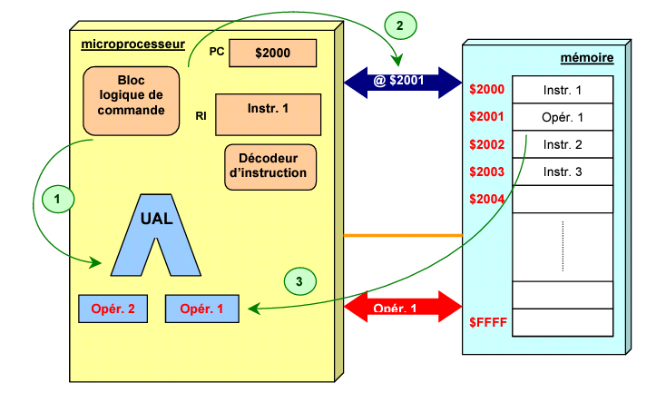

Acceuil
STRUCTURE DE L'ORDINATEUR
PROGRAMME
Generalite
- Définition:
- Ordinateur: c'est un appareil électronique programmable qui traite automatiquement les informations.
- Information: c'est l'ensemble des données qui sont déjà traitées.
L'ordinateur est constitué de
l'Unité Centrale et des Périphériques
Schéma fonctionnelle d'un ordinateur
La structure d'un ordinateur comprend les éléments suivants:
- une unité centrale de traitement
- une unité de mémoire
- des unités de stockage
- des unités d'entrée/ sorties
- un système de bus: permettant de véhiculer l'information entre l'unité centrale et les autres unités.
Codage de l'information: Les différents constituants de l'ordinateur sont composés des circuits électriques ou d'éléments magnétiques
- Bit: c'est un information l'élémentaire. C'est la quantité de l'information sous forme Binaire qui ne peut prétendre que 0 et 1.
- Codage: c'est le passage d'une représentation naturelle ou décimal de l'information à une représentation Binaire.
Un groupement de 8 bits s'appelle Octet ou byte.
retour au programme
Architecture de base selon Von Neuman:
- L'unité centrale de traitement:
 Le microprocesseur: ou CPU ( Central Process Unit) c'est un circuit intégré complexe. Il résulte de l'intégration sur une puce de fonction Logique combinatoire ( logique et/ou Arithmétique). Celui qui réalise tout les opérations demandées sur l'Unité Centrale.
Le microprocesseur: ou CPU ( Central Process Unit) c'est un circuit intégré complexe. Il résulte de l'intégration sur une puce de fonction Logique combinatoire ( logique et/ou Arithmétique). Celui qui réalise tout les opérations demandées sur l'Unité Centrale.
Il est caractérisé par:
- Sa marque: ex: Intel, cyrix,...
- Sa fréquence d'horloge: c'est le nombre d'opération que le processeur peut effectuer en une seconde ( Notation: hz)
Remarque: L'information traitée par un microprocesseur sont de différentes Types( instructions, images, vidéos,...) mais elles sont toujours représentées sous un format Binaire. Seul le codage changera suivant les différentes types de données à traiter.
L'Unité Centrale comporte les éléments suivants:
Unité Arithmétique et logique(UAL): c'est un circuit logique chargé d'exécuter les opérations élémentaires permettant les traitements effectués par l'ordinateur. Il reçoit les instructions de l'UCC et peut lire et écrire en mémoire.
l'unité de Commande et de Contrôle(UCC): Il cherche des circuits en mémoire, et décode cette instruction et transmet une action à l'UAL si nécessaire.
Schéma fonctionnelle de processeur:
NB: Tout les actions de font par l'utilisation des bus qui portent les informations.
- Mémoire centrale:
- Caractéristique d'une mémoire:
- Capacité;
- Format des Données:
c'est la largeur du mot mémorisables c'est à dire le nombre de Bit que l'on peut mémoriser par case mémoire.
- Temps d'accès: c'est le temps pour la lecture ou écriture d'un mot en mémoire. Il varie de quelque 10è de microseconde à quelque nanoseconde.
- Temps cycle/cycle mémoire: c'est le temps minimal entre deux accès mémoires.
- Débit: c'est le nombre maximum d'informations lu ou écrit par seconde.
- volatilité: elle caractérise la permanence dans la mémoire.
- volatile: si elle risque d'être altérée par un défaut d'alimentation électrique.
- Non volatile: cas contraire.
- Les différents types de mémoires:
• RAM ( Random Acces Memory): C'est une mémoire où on peut lire et écrire à volonté. Elle est volatile c'est à dire qu'elle perd son contenu dès qu'elle est hors tension ou sous alimentation électrique.
Il existe deux différents types de RAM: -Statique RAM(SRAM):elles ne nécessitent pas de rafraîchissement(conserve l'information pendant plusieurs heures).
Dynamique RAM:elles nécessitent un rafraîchissement de l'information plusieurs fois par seconde.
Il existe plusieurs 2 Types de Dynamique RAM, ce sont:
• Mémoire asynchrone: le processeur ne peut pas engager un nouvel accès tant que l'accès précédent n'est pas achevé c'est à dire l'accès des instructions à traiter est successive.
Ex:FPM(:Fast Page Mode), EDO(:Extended Data Out), BEDO(: Burst EDO).
• Mémoire synchrone: le processeur peut engager des accès consécutifs même si l'accès précédent n'est pas achevé c'est à dire il peut traiter tous les instructions en même temps.
Ex:SDRAM(: Synchrone DRAM ), SGRAM(:SDRAM cart graphique),DDR SDRAM(:Double Data Rate SDRAM),FC RAM(:Fast Cycle RAM),...
Ses caractéristiques sont:
- Sa rapidité d'accès: qui est essentielle pour fournir rapidement les données au processeur.
- Sa volatilité: tous données de cette mémoire sont perdues lorsque l'ordinateur sera en hors tension, en effet, la RAM est dans un état indéterminé lors du démarrage.
• ROM( Read Only Memory): c'est une mémoire qui est destinée à être lue, en revanche, son contenu n'est pas altéré par un coupure de courant: c'est une mémoire rémanente.
Il existe plusieurs types de ROM, ce sont: PROM,EPROM,EEPROM,FLASH ROM,...
Installée sur la carte mère la ROM contient le les informations nécessaires au démarrage d’un ordinateur. Appelé également BIOS. Les modifications sur la ROM (BIOS) sont maintenues grâce à la pile présente sur la carte mère. Si les modifications apportées au BIOS ne s’enregistrent pas il faut remplacer la pile du BIOS.
Ces avantages sont: Densité élevé, Non volatile, mémoire rapide.
- Hiérarchie des mémoires:
- les registres:sont les éléments de mémoire les plus rapides. Ils sont situés au niveau du processeur et servent au stockage des opérandes et des résultats intermédiaires.
- Mémoires caches:est une mémoire rapide de faible capacité destinée à accélérer l’accès à la mémoire centrale en stockant les données les plus utilisées.
- Mémoire principale:est l’organe principal de rangement des informations. Elle contient les programmes (instructions et données) et est plus lente que les deux mémoires précédentes.
- Mémoire d'appui:sert de mémoire intermédiaire entre la mémoire centrale et les mémoires de masse. Elle joue le même rôle que la mémoire cache.
- Mémoire de masse:est une mémoire périphérique de grande capacité utilisée pour le stockage permanent ou la sauvegarde des informations. Elle utilise pour cela des supports magnétiques (disque dur, ZIP) ou optiques (CDROM, DVDROM).
- Organisation des mémoires:
Une mémoire peut être représentée comme une armoire de rangement constituée de différents tiroirs. Chaque tiroir représente alors une case mémoire qui peut contenir un seul élément : des données. Le nombre de cases mémoires pouvant être très élevé, il est alors nécessaire de pouvoir les identifier par un numéro. Ce numéro est appelé adresse. Chaque donnée devient alors accessible grâce à son adresse.
- Critère de choix de mémoire:
- Capacité
- vitesse
- consommation
- coût
Les BUS:
- Un bus de donnée:bidirectionnel qui assure le transfert des informations entre le microprocesseur et son environnement, et inversement. Son nombre de lignes est égal à la capacité de traitement du microprocesseur.
- Un bus d'adresse:unidirectionnel qui permet la sélection des informations à traiter dans un espace mémoire(ou espace adressable) qui peut avoir 2n emplacements, avec n = nombre de conducteurs du bus d'adresses. Il véhicule les adresses de cage mémoire et de périphérique solliciter par les microprocesseur c'est à dire qu'il permet la sélection des informations à traitrer dans un espace mémoire.
- Un bus de Contrôle:constitué par quelques conducteurs qui assurent la synchronisation des flux d'informations sur les bus des données et des adresses.Il véhicule l'ordre à exécuter:
- Alimentation des composants;
- Signaux horloge, Read/Write;
- Signaux Chip select, Interruptions
LES PÉRIPHÉRIQUES:
Ces périphériques sont les organes de l'ordinateur qui permettent de communiquer avec l'unité centrale et de stocker les informations du façon permanente.
- Les périphériques d'entrée:
- Le clavier: il permet de saisir les informations textuelles et numérique.
- La souris: c'est un périphérique de pointage servant à déplacer un curseur, sur l'écran, elle permet de transmettre des ordres grâce à ces boutons.
- Scanner: il permet de numériser les documents.
- Haut parleur:amplificateur de chant.
- Les périphériques de sortie:
- L' écran: il permet de visualiser les informations.
- L'imprimante: il permet d'imprimer des documents sur papier.
- Le périphériques de stockage:
- Les disques magnétiques:
- Disque dur: principal outil de stockage des données d'un ordinateur. Il contient le système d'exploitation. La capacité d'un disque dur est exprimée en GIGA-OCTET.
- Disquette: actuellement, elle est remplacée par le Flash Disque.(USB).
- Les disques optiques compactes: Un disque optique compacte (CD ROM: Compact Disque) offre une capacité de stockage exceptionnelle et une très grande sécurité. L'écriture sur les Disques optiques se fait par un graveur.
- Autre disque optique: ex: DVD, DVDX, Blue Ray, etc....
CYCLE D'EXECUTION D'UNE INSTRUCTION
Le microprocesseur ne comprend qu’un certain nombre d’instructions qui sont codées en binaire. Le traitement d’une instruction peut être décomposé en trois phases.
Phase 1: Recherche de l'instruction à traiter
- Le PC contient l'adresse de l'instruction suivante du programme. Cette valeur est placée sur le bus d'adresses par l'unité de commande qui émet un ordre de lecture.
- Au bout d'un certain temps (temps d'accès à la mémoire), le contenu de la case mémoire sélectionnée est disponible sur le bus des données.
- L'instruction est stockée dans le registre instruction du processeur.
Phase 2 : Décodage de l’instruction et recherche de l'opérande
Le registre d'instruction contient maintenant le premier mot de l'instruction qui peut être codée sur plusieurs mots. Ce premier mot contient le code opératoire qui définit la nature de l'opération à effectuer (addition, rotation,...) et le nombre de mots de l'instruction.
- L'unité de commande transforme l'instruction en une suite de commandes élémentaires nécessaires au traitement de l'instruction.
- Si l'instruction nécessite une donnée en provenance de la mémoire, l'unité de commande récupère sa valeur sur le bus de données.
- L’opérande est stockée dans un registre.

Phase 3 :Exécution de l'instruction
- Le micro-programme réalisant l'instruction est exécuté.
- Les drapeaux sont positionnés (registre d'état).
- L'unité de commande positionne le PC pour l'instruction suivante.
VUE INTÉRIEUR ET EXTÉRIEUR DE L'ORDINATEUR
Vue extérieur de l'ordinateur
L'unité centrale, dans le langage courant, est le boitier principal de l'ordinateur. Elle contient les données, les logiciels et tous les périphériques qui y sont reliés:clavier, souris, écran,...
Dans un ordinateur portable, tout les composants sont reliés dans un même bloc.
- Ouverture d'Unité Centrale:
Pour pouvoir explorer l'intérieur d'Unité Centrale, il faut d'abord éteindre l'ordinateur. Une fois l'ordinateur éteint, débrancher tout les câbles reliés à l'Unité Centrale.
Remarque: Éviter de toucher les pistes électriques des cartes ainsi que les composants à la mains nue, à cause de l'électronique statique.
- L'intérieur de l'Unité Centrale:
Une fois l'unité centrale est ouverte, on trouve généralement les éléments suivants:
- Bloc d'alimentation: c'est la centrale électrique de l'ordinateur, des câbles coloré en sorte pour aller alimenté chaque élément de l'Unité Centrale: Sa caractéristique principale et sa puissance nominale.
- Des lecteurs de disques: elles sont généralement placé en haut de l'Unité Centrale dans un compartiment adapté. Les lecteurs récent sont généralement la capacité de graver des disques vierges.
- Les disques durs: le disque dur est la mémoire permanente de l'ordinateur, qui stocke toutes les données informatiques.
ex: le système d'exploitation, les logiciels, et les données personnelles( photo, music, vidéos, documents, ...). C'est un élément essentiel dans un ordinateur.
La carte mère: l'élément constitutif principal de l'ordinateur est la carte mère( en Anglais: MAINBORD). c'est le socle permettant la connexion de l'ensemble des éléments essentiels de l'ordinateur.
Nous allons voir tous les éléments constitutifs de l'Unité Centrale:
- Socket ou slot du processeur
- Prise de l'alimentation électrique de la carte mère
- Prise de l'alimentation électrique du ventilateur du processeur
- Port situé à l'arrière
- Les slots mémoire
- Port IDE
- Port Floppy
- Port PCI express
- Port PCI
- Pile
- Chipset
- Port SATA(Serials ATA)
- Port USB interne Remarque: Les ports de la carte mère sont:
- Port PS/2(Pour souris et clavier)
- Port parallèle (de couleur rose)
- Port série (de couleur bleue)
- Port FireWire
- Port USB(Universal Serial Bus)
- Prise Jack (Micro, écouteur )
Il ne suffit pas de brancher tous les périphériques pour qu'il puisse fonctionner, ils ont besoin des pilotes ou DRIVER. Ce sont des logiciels qui permettent au système d'exploitation de reconnaître et de faire fonctionné des périphériques.
Ses pilotes sont:
- Soient fournit sur le système d'exploitation
- Soient fournit sur un CD ROM avec le périphérique lors de l'achat ou bien téléchargé sur Net.
retour au programme Suite